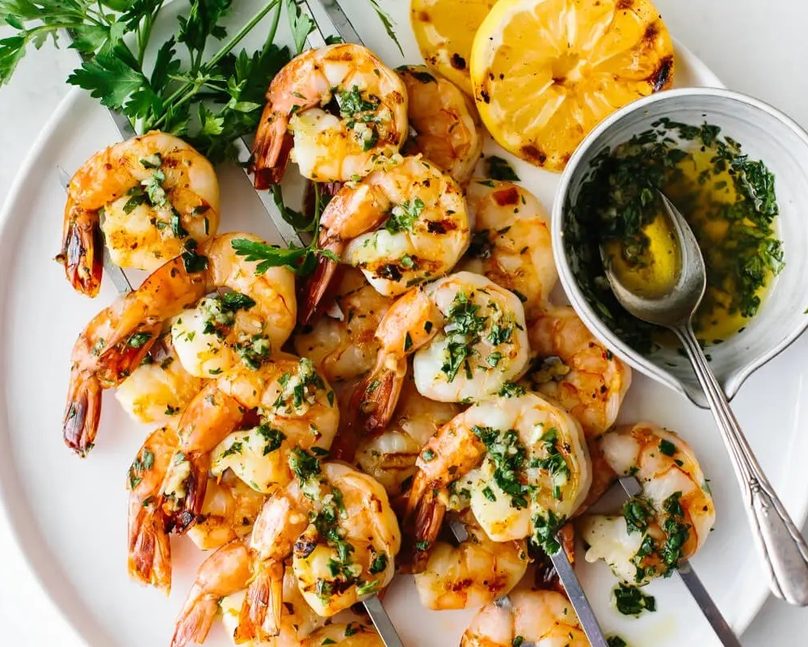

Cooker's Kitchen

Lemon-Garlic Shrimp Skewers
Ingredients:
- 1 1/2 pounds large shrimp, peeled and deveined
- 1/4 cup olive oil
- 3 cloves garlic, minced
- 1 lemon, juiced
- Salt and black pepper to taste
- 8 wooden skewers (soaked in water for 30 minutes to prevent burning)
- 1 lemon, cut into wedges, for serving
Instructions:
- In a large bowl, mix together the olive oil, garlic, lemon juice, salt, and black pepper.
- Add the shrimp to the bowl and toss to coat with the marinade.
- Cover the bowl and refrigerate for 30 minutes to 1 hour.
- Preheat your grill to medium-high heat.
- Thread the shrimp onto the skewers.
- Place the skewers on the grill and cook for 2-3 minutes on each side, until the shrimp are pink and cooked through.
- Serve the shrimp skewers hot with lemon wedges.